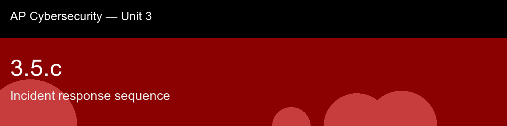

3.5.c recap, Incident response sequence
Nice work today. Here's what to lock in:
- Recap handout:
post-lecture-handout.docx
- Simulation: SimLab
- Self-check quiz: due before next class
The big picture: The ordering logic is the part worth being able to defend, not just recite: containment has to come before eradication because cleaning a still-connected host gives the attacker a chance to notice and either react or simply reinfect a moment later, and recovery has to wait for eradication to be verified complete because bringing a system back online before the root cause is actually gone just restarts the incident from the same starting point. That's not bureaucratic sequencing for its own sake, each phase is a genuine precondition for the next one succeeding at all, the same each-layer-assumes-the-one-before-it-held logic that ran through 3.2.c's defense-in-depth model, just applied to a timeline instead of a network diagram. And don't let Lessons Learned read as an afterthought: it's the phase that closes the loop back to Preparation, the very first phase, which is precisely why skipping it is how the same incident keeps recurring, the technical fix in Eradication handles this specific instance, but the process gap that allowed it in the first place (a missing patch policy, an unmonitored segment, exactly the kind of managerial-control failure 3.2.b warned about) goes unaddressed until someone deliberately writes it down and fixes it. This skill is a fitting closer for Unit 3 because it's where every technical control from 3.1 through 3.5, spoofing defenses, segmentation, firewalls, IDS/IPS, monitoring, finally meets the organizational process that decides whether any of it actually mattered when a real incident happens.
Key terms to lock in:
- Incident response (IR), the structured process an organization follows to detect, contain, and recover from a security incident.
- NIST SP 800-61 lifecycle, the six-phase model: Preparation, Identification, Containment, Eradication, Recovery, Lessons Learned.
- Containment (short-term / long-term), actions that stop an incident from spreading, performed before the root cause is removed.
- Eradication, removing the actual cause of the incident (malware, backdoor accounts, unpatched vulnerability) after containment.
- Lessons Learned (Post-Incident Activity), the closing phase where the team documents the incident and updates its plan, tools, or training to prevent recurrence.
Common misconceptions -- don't fall for these:
- "You should remove the malware as soon as you find it." → Removing malware before containment can tip off the attacker or allow reinfection; contain first, then eradicate.
- "Incident response starts when the incident happens." → Preparation is itself a phase, performed continuously before any incident, and is what determines how effective the rest of the response will be.
- "Recovery means the incident is over." → Recovery restores operations, but Lessons Learned is still required, without it, the organizational gap that allowed the incident often persists.
Learning objective(s): 3.5.C

## 3.5.c recap, Incident response sequence
Nice work today. Here's what to lock in:
- Recap handout: `post-lecture-handout.docx`
- Simulation: SimLab
- Self-check quiz: due before next class
**The big picture:** The ordering logic is the part worth being able to defend, not just recite: containment has to come before eradication because cleaning a still-connected host gives the attacker a chance to notice and either react or simply reinfect a moment later, and recovery has to wait for eradication to be verified complete because bringing a system back online before the root cause is actually gone just restarts the incident from the same starting point. That's not bureaucratic sequencing for its own sake, each phase is a genuine precondition for the next one succeeding at all, the same each-layer-assumes-the-one-before-it-held logic that ran through 3.2.c's defense-in-depth model, just applied to a timeline instead of a network diagram. And don't let Lessons Learned read as an afterthought: it's the phase that closes the loop back to Preparation, the very first phase, which is precisely why skipping it is how the *same* incident keeps recurring, the technical fix in Eradication handles this specific instance, but the process gap that allowed it in the first place (a missing patch policy, an unmonitored segment, exactly the kind of managerial-control failure 3.2.b warned about) goes unaddressed until someone deliberately writes it down and fixes it. This skill is a fitting closer for Unit 3 because it's where every technical control from 3.1 through 3.5, spoofing defenses, segmentation, firewalls, IDS/IPS, monitoring, finally meets the organizational process that decides whether any of it actually mattered when a real incident happens.
**Key terms to lock in:**
- **Incident response (IR)**, the structured process an organization follows to detect, contain, and recover from a security incident.
- **NIST SP 800-61 lifecycle**, the six-phase model: Preparation, Identification, Containment, Eradication, Recovery, Lessons Learned.
- **Containment (short-term / long-term)**, actions that stop an incident from spreading, performed before the root cause is removed.
- **Eradication**, removing the actual cause of the incident (malware, backdoor accounts, unpatched vulnerability) after containment.
- **Lessons Learned (Post-Incident Activity)**, the closing phase where the team documents the incident and updates its plan, tools, or training to prevent recurrence.
**Common misconceptions -- don't fall for these:**
- "You should remove the malware as soon as you find it." → Removing malware before containment can tip off the attacker or allow reinfection; contain first, then eradicate.
- "Incident response starts when the incident happens." → Preparation is itself a phase, performed continuously before any incident, and is what determines how effective the rest of the response will be.
- "Recovery means the incident is over." → Recovery restores operations, but Lessons Learned is still required, without it, the organizational gap that allowed the incident often persists.
**Learning objective(s):** 3.5.C